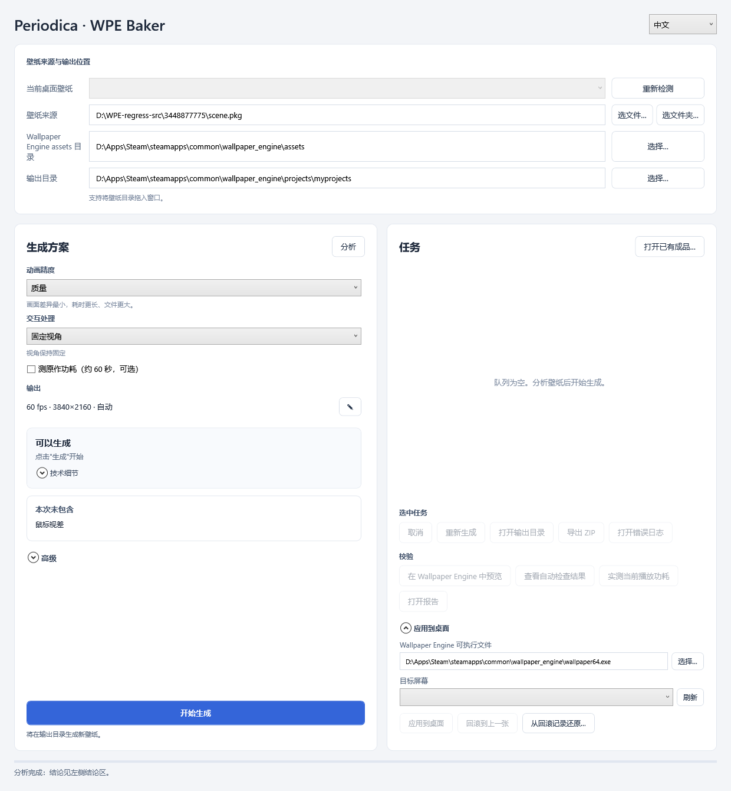

你的壁纸一直在实时渲染。
烘焙一次就够了。
Periodica 分析 Wallpaper Engine 场景，通过数学建模协调其中可烘焙动画的周期，让画面形成首尾衔接的循环，再以视频形式播放。时钟、音乐响应等实时内容可以继续保留，在维持动态画面效果的同时，减少重复渲染的开销。它的首个应用是面向 Wallpaper Engine 的 WPE Baker。
回到同一刻。
帧对比工具通过画面寻找重复点；Periodica 则直接分析动画的数学关系，协调着色器时间、动画轨道、粒子循环和视频时间基准，为可烘焙的内容求解循环。彼此独立的视频组可以采用各自的周期，无需等待整个场景同时回到起点。拖动分隔线，可以比较上方循环的第一帧和最后一帧。

 第 1 帧第 3,000 帧
第 1 帧第 3,000 帧
各组件的周期不同。
Periodica 将它们协调成循环。
假设一个波浪动画的周期是 7.3 秒，一个摆动是 11.1 秒，一个粒子循环是 4.6 秒，一段视频又是 20 秒，它们同时回到起点可能需要很长时间，未必适合直接录成循环视频。Periodica 分别求出每个组件的周期，在所选预算内微调播放速度，让需要共同播放的动画形成首尾衔接的循环。
控制动画的调整幅度
三个精度预设限定了允许调整的幅度，即“可见变化预算”：效率（Efficiency）5%，平衡（Balanced）3%，质量（Quality）采用仍然能够闭合循环的最小改动。程序会优先寻找调整更小的方案，并在报告中列出实际采用的周期和调速幅度。
让周期调整尽量不影响观感
每个组件的调整幅度都有单独上限。对于周期很长的慢速运动，程序还会结合位移和速度变化判断能否闭合。无法满足条件的内容保留实时运行，报告会说明具体图层及原因。
根据原始场景验证循环接缝
生成过程中，程序会追加渲染循环点附近的画面，检查编码后的接缝，并对照烘焙内容与实时图层合成后的结果。只有相应检查通过，输出才会被接受。
拖入场景，得到结果。
两个设置项，一份分析结果。“动画精度（Animation precision）”决定动画允许调整的幅度；“交互处理（Interaction）”决定鼠标、音频等交互效果的处理方式。更多设置可在“高级”中调整。
把壁纸文件夹拖进去
文件夹位于 steamapps\workshop\content\431960。输出目录会直接使用 Wallpaper Engine 自己的项目文件夹，因此生成结果会自动出现在 Wallpaper Engine 的壁纸列表中。
动画精度 · 交互处理
质量、平衡和效率对应不同的可见变化预算，默认使用平衡。如果当前精度无法闭合循环，分析时会继续尝试下一精度档位，并标明最终采用的方案。交互处理提供保留、固定视角和关闭三种模式，决定鼠标与音频驱动效果的处理方式。时钟、日期和媒体文本在任何模式下都保持实时更新。
看最终判定
程序只会给出四种固定状态之一。“本次未包含”会列出哪些内容没有被纳入烘焙。如果当前的设置组合无法闭合，而另一组设置能够成功，报告会给出可一键应用的建议。

重复的代价。
测试平台为搭载 Intel Arc B390 的笔记本电脑，使用官方 Wallpaper Engine，以 A/B/B/A 顺序对照原始场景与烘焙输出。成品设置为 1920×1080、60 fps，采用平衡精度和默认壁纸属性；原作在 3072×1920 屏幕上正常渲染。核显功耗与 CPU 封装功耗分别记录。


| 壁纸 | 原作核显功耗 | 烘焙后 | 变化 | CPU 封装：原作 → 烘焙后 |
|---|---|---|---|---|
| Nijika (Bocchi the Rock!)3650475846 | 20.87 W | 14.63 W | −29.9% | 31.80 → 26.51 W |
| Alone（日/夜场景）3448877775 | 5.52 W | 4.81 W | −12.8% | 15.45 → 16.17 W |
| Atri — My Dear Moments3669681034 | 8.51 W | 0.27 W | −96.8% | 17.85 → 9.26 W |
| Ultraman Leo3685247684 | 9.08 W | 1.44 W | −84.1% | 19.58 → 11.58 W |
| Yuri3572877776 | 2.10 W | 0.48 W | −77.4% | 11.59 → 9.45 W |
| Frieren — Pagoda of flowers3426865175 | 10.57 W | 7.23 W | −31.6% | 19.62 → 19.64 W |
| Lost Landscape 33713073223 | 8.10 W | 3.30 W | −59.2% | 17.96 → 13.61 W |
| Ayanami Rei3258032485 | 2.16 W | 0.14 W | −93.4% | 11.23 → 8.72 W |
高刷照开，功耗更低。
随着播放帧率提高，原始场景需要实时渲染更多画面。将周期动画烘焙为视频后，视频解码器承担这部分播放工作，减少 3D 引擎逐帧重复渲染的负担。时钟、音频响应等保留的实时内容仍然按原有方式运行。
这个项目最初就是在一台使用 iGPU 的笔记本电脑上开始的。
| 壁纸 / 帧率 | 原作核显功耗 | 烘焙后 | 变化 | CPU 封装：原作 → 烘焙后 |
|---|---|---|---|---|
| Atri · 60 fps | 8.50 W | 0.30 W | −96.5% | 16.53 → 9.33 W |
| Atri · 165 fps | 25.55 W | 2.19 W | −91.4% | 37.67 → 12.84 W |
| Ayanami Rei · 120 fps | 8.75 W | 1.97 W | −77.5% | 18.62 → 13.72 W |
周期动画可以烘焙，
交互与实时内容分别处理。
烘焙进循环中的内容
- 具有可证明周期的着色器动画，例如波浪、摆动、脉冲、滚动
- 动画轨道、精灵图、粒子循环
- 嵌入式视频循环及其时间基准
- 静态美术资源，以完整分辨率保留
交互效果与实时内容
- 鼠标视差与指针效果
- 音频响应与频谱
- 时钟、日期与昼夜切换
- 交互面板与自定义脚本
交互处理提供“保留”“固定视角”和“关闭”三种模式，默认使用“固定视角”。
无论选择哪种模式，时钟、日期和媒体文本都会继续实时更新。“保留”模式目前为实验性功能，可能增加 GPU 占用。
从周期求解到离线渲染。
一张 Wallpaper Engine 场景可能包含数百种着色器变体、粒子系统、脚本控制器和视频图层。要把它们烘焙成循环，仅仅寻找两张相似的画面并不足够：程序需要知道动画如何随时间变化，以及哪些内容必须继续响应实时输入。
2.0 用着色器时间分析取代了旧版的周期方程库。程序对实际编译得到的 SPIR-V 进行抽象解释，沿数据流追踪时间变量，推导周期、持续漂移，以及经过一段时间后停止变化的动画。不必为每一种新效果单独编写方程，陌生的自定义着色器也可以进入分析。
求出周期之后，程序还会寻找能够局部调整的参数。一个效果里的水波、光晕和滚动不必再一起加速；程序将会分别协调能够独立调整的运动，彼此独立的视频组也将按各自的周期循环。
作者脚本同样纳入时间分析。恒定值、周期变化和只在开场发生的动画可以被识别；对于能够精确模拟的跨帧状态，程序会寻找状态重新出现的时刻。真正依赖鼠标、音频和时钟的内容则保留实时运行。
为了把烘焙结果放回原场景，Periodica 还需要处理透明度、混合顺序和 HDR 中间画面。超出普通视频范围的亮度经过映射存入视频，再由生成的着色器还原，使缓存后的内容能够继续参与作者原有的效果链。
离线渲染器采用 Vulkan，并通过减少数据回读、中间文件和重复编码提高生成效率。支持的 GPU 路径直接编码显存中的画面，其他路径采用流式渲染与编码；接缝、画质、合成和硬件解码检查随生成过程一起完成。
下一块屏幕。
Wallpaper Engine，Windows
将可重复的场景动画烘焙成视频，并与保留的实时内容一同放回原场景。Wallpaper Engine 是 Periodica 的第一个应用场景。
性能更新
以着色器和脚本时间分析取代逐项维护的周期方程，扩展可烘焙的动画范围。独立视频组采用各自的循环周期，完善 HDR 中间画面的处理，并减少生成过程中的数据回读、重复编码和等待。
通用世代
通过缓存、复用、预计算和确定性重放，让更多实时图层进入实用的烘焙范围，并引入基于 AI 加速的全新构建方案。
时域重建（Temporal reconstruction）
利用历史帧与运动信息重建画面，减少每一帧都从头渲染的工作，并探索 GPU 与 NPU 的协同加速。
简短回答。
我最直接能得到什么？
让喜欢的动态壁纸以更低的功耗运行。
它能让每一张壁纸都更省资源吗？
轻量场景本身没有多少可节省的空间，工具会在渲染之前直接说明。功耗较高、以周期性动画为主的场景才是 13–97% 降幅的来源；以交互为主的场景则会烘焙其中确定性的核心部分，其余交互与实时内容分别处理。
烘焙后的循环看起来会和原始壁纸不一样吗？
可见变化预算由你选择：效率、平衡或质量。报告会逐项列出每一个被重新定时的组件及其精确百分比。接缝会根据原始场景自身的运动进行验证，通过之后输出才会被接受。
我需要准备什么？
Windows、Wallpaper Engine，以及一块用于离线渲染的 GPU。便携版没有安装程序，也不需要 Python。烘焙一个典型场景需要几分钟；播放时由视频解码器处理烘焙内容，保留的实时图层继续渲染。
它是开源的吗？
是。工具层采用 MIT 许可，渲染器采用 GPL v2；完整源码、第三方声明与构建记录都在仓库中。